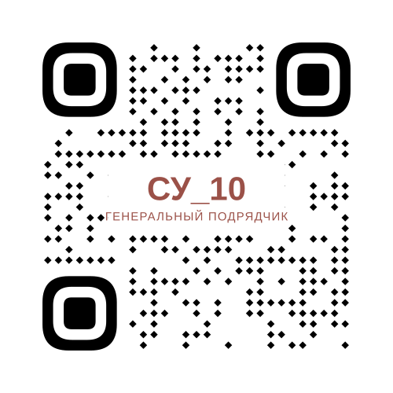

СЛУЖБА ДОВЕРИЯ
ООО «СУ-10»
QR-код страницы

Вы можете обратиться по вопросам нарушений трудовых прав, охраны труда, деловой этики и иных нарушений.
ООО «СУ-10»

Вы можете обратиться по вопросам нарушений трудовых прав, охраны труда, деловой этики и иных нарушений.